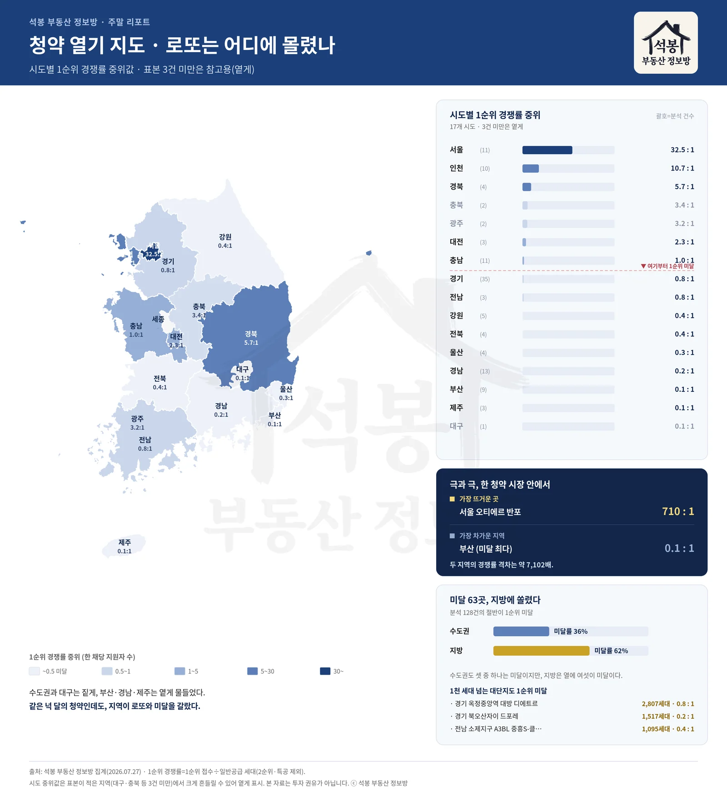

"청약은 로또"라는 말, 절반만 맞았습니다. 최근 넉 달(4월 9일~7월 20일 접수) 사이 1순위 경쟁률이 확정된 아파트 청약 120건을 세어보니, 그중 60곳이 1순위에서 미달했습니다. 정확히 절반입니다. 그런데 같은 기간 서울 반포에서는 한 채에 710명이 몰렸습니다. 로또는 분명히 있었습니다. 다만 아무 데서나 터지지 않았습니다.
먼저 용어를 하나 짚고 가겠습니다. 이 글에서 말하는 경쟁률은 모두 1순위 경쟁률입니다. 1순위 접수 건수를 일반공급 세대수로 나눈 값이고(2순위와 특별공급은 빼고 계산합니다), 청약 시장의 열기를 가장 빠르게 보여주는 지표입니다. 10 대 1이면 한 채에 열 명이 붙었다는 뜻이고, 1 대 1을 넘기지 못하면 접수 자체가 공급 물량에 미치지 못한 '미달'입니다.
절반은 미달, 24곳은 과열, 한가운데는 텅 비었다
120건의 1순위 경쟁률을 한 줄에 늘어놓으면 시장이 어떻게 갈라졌는지 한눈에 보입니다. 위 그래픽의 첫 번째 그림이 그 분포입니다. 점 하나가 청약 한 건이고, 오른쪽으로 갈수록 경쟁이 치열했던 단지입니다.
눈에 띄는 건 가운데가 비었다는 점입니다. 경쟁률 중위값은 1.0 대 1, 딱 미달 경계선입니다. 적당히 인기 있는 '보통 청약'은 드물고, 수백 대 1로 과열된 곳(10 대 1을 넘은 곳이 24곳)과 접수조차 안 된 미달(60곳)로 양쪽 끝에 쏠렸습니다. 중간이 사라진 시장, 이게 지금 청약의 민낯입니다.
최근 넉 달 1순위 경쟁률 확정 청약 120건
🔥 과열(10 대 1 이상) 24곳 · 🧊 1순위 미달 60곳 (약 절반)
최고 경쟁 오티에르 반포 710 대 1 · 중위 1.0 대 1
여기서부터는 회원에게 보여드립니다
카카오 로그인 3초면 전문을 읽을 수 있습니다. 무료입니다.
가입하시면 지역 시장조사 보고서(약식)를 2회 무료로 요청하실 수 있습니다.
이미 회원이면 같은 버튼으로 로그인만 됩니다
진짜 로또 TOP 10, 여덟 곳이 수도권이었다
경쟁이 가장 뜨거웠던 열 곳을 뽑아봤습니다.
순위
단지
1순위 경쟁률
공급
분양가(전용 평당)
1
오티에르 반포 (서울)
710 : 1
86세대
1.07억
2
북서울자이 폴라리스 (서울)
428 : 1
6세대
0.45억
3
더샵 시에르네 (울산)
144 : 1
36세대
0.29억
4
이촌 르엘 (서울)
135 : 1
88세대
0.89억
5
동작 센트럴 동문 디 이스트 (서울)
115 : 1
72세대
0.91억
6
공덕역자이르네 (서울)
80 : 1
177세대
0.90억
7
안양 에버포레 자연앤 e편한세상 (경기)
57 : 1
344세대
0.31억
8
더샵 송도그란테르 (인천)
50 : 1
100세대
0.55억
9
골드클래스 시그니처 (전북)
35 : 1
341세대
0.21억
10
써밋 더힐 (서울)
32 : 1
432세대
1.16억
열 곳 중 여덟 곳이 서울·인천·경기, 그중 여섯이 서울입니다. 1위 오티에르 반포는 전용 평당 1억이 넘는 분양가에도 710 대 1이 붙었습니다. 비싸도 강남권 새 아파트라면 줄을 선다는 이야기입니다. 반대로 나머지 두 곳(울산·전북)을 보면 지방에서도 로또가 아예 없지는 않았습니다. 다만 뒤에서 보겠지만, 지방의 로또는 예외에 가깝습니다.
한 가지 걸러 볼 대목이 있습니다. 2위 북서울자이 폴라리스는 보류지 6세대짜리 소량 물량이었습니다. 공급이 손에 꼽을 만큼 적으면 몇 명만 몰려도 경쟁률이 크게 튑니다. 숫자만 보고 "북서울자이가 반포 다음가는 로또"라고 읽으면 곤란한 이유입니다. 경쟁률을 볼 때는 공급 세대수를 늘 함께 봐야 합니다.
로또는 주소가 정해져 있었다
이 양극화를 지도에 얹으면 더 분명해집니다. 두 번째 그래픽입니다.

시도별 1순위 경쟁률 중위값 지도
시도별 1순위 경쟁률 중위값을 색으로 칠했습니다. 서울이 32.5 대 1, 인천이 10.7 대 1로 짙게 물든 반면, 부산·제주는 0.1 대 1, 경남은 0.2 대 1로 옅습니다. 가장 뜨거운 곳(서울 오티에르 반포 710 대 1)과 가장 차가운 지역(부산 0.1 대 1)의 격차는 약 7,100배입니다. 같은 넉 달, 같은 나라의 청약인데 이렇게까지 갈렸습니다.
수도권과 지방을 묶어보면 격차가 더 분명해집니다. 미달률로 보면 수도권은 셋 중 하나(36%)가 1순위 미달인데, 지방은 열에 여섯(62%)이 미달이었습니다. 실제로 미달 60곳의 주소를 보면 경기 19곳, 부산 9곳, 경남 8곳 순인데, 경기가 가장 많은 건 물량 자체가 많아서이고(분석 대상 37건이 경기), 비율로 따지면 부산·경남·제주·울산 같은 지방이 압도적입니다.
주목할 건 지방에서는 대단지도 미달했다는 점입니다. 경기 옥정중앙역 대방 디에트르는 2,807세대라는 큰 물량에도 0.8 대 1에 그쳤고, 경기 북오산자이 드포레(1,517세대)는 0.2 대 1, 전남 소제지구 중흥S클래스(1,095세대)는 0.4 대 1이었습니다. 브랜드와 세대수가 받쳐줘도, 자리가 지방이면 접수가 채워지지 않았습니다. "청약 넣으면 무조건 남는다"는 공식은 지역을 가리지 않으면 성립하지 않습니다.
한 가지 덧붙이면, 대구·충북처럼 분석 표본이 한두 건뿐인 지역은 지도에서 옅게 처리했습니다. 표본이 적으면 한 단지의 성적에 중위값이 크게 흔들리기 때문에, 참고용으로만 보시는 게 좋습니다.
그래서, 청약을 어떻게 봐야 할까
이번 집계가 말하는 건 간단합니다. 청약이 로또인 시절은 지역과 단지를 가려 남았고, 그 바깥에서는 '넣으면 되는' 시장이 아니라 '남으면 줍는' 시장이 되고 있습니다. 지방에서 절반 넘는 단지가 미달이라는 건, 뒤집어 말하면 무순위·잔여 세대를 노려볼 여지가 그만큼 커졌다는 뜻이기도 합니다.
반대로 수도권 핵심의 과열 단지는 경쟁률만큼이나 분양가도 높습니다. 오티에르 반포처럼 전용 평당 1억이 넘는 곳은, 당첨이 곧 시세 차익을 보장하던 예전 공식과는 결이 다릅니다. 경쟁률이 높다고 무조건 안전마진이 큰 건 아니라는 점은, 분양가와 주변 시세를 따로 따져봐야 확인할 수 있습니다. 이 대목은 다음 편에서 데이터로 자세히 다뤄보겠습니다.
이 글의 경쟁률은 공개된 1순위 경쟁률 확정치이며, 최근 넉 달 접수분 120건을 대상으로 했습니다. 조합원 취소분·보류지 등 소량 물량은 경쟁률이 크게 흔들릴 수 있어 공급 세대수를 함께 표기했습니다. 시도 중위값은 표본이 적은 지역에서 대표성이 떨어질 수 있습니다.
공개 청약·실거래 정보 기반, 석봉 부동산 정보방 집계 · 기준일 2026년 7월 27일 · 편집·제작: 석봉 부동산 정보방 · 본 자료는 정보 제공 목적이며 투자 권유가 아닙니다.